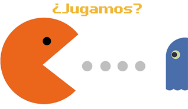

"Aprender sin darte cuenta de que estás aprendiendo"
Ing. Luis Félix
YO
 @luisfelix1983
@luisfelix1983
Gamificación (Gamification)
La gamificación es una forma de aplicar el concepto de juego en diferentes ámbitos, logrando así “potenciar la motivación, la concentración, el esfuerzo” a través de mecánicas de juegos.

Aprender sin darte cuenta de que estás aprendiendo
¿En qué consiste exactamente?
Sistema de logros y recompensas Foursquare
Progresión, como la barra de porcentaje de perfil completado Linkedin
Niveles, Medallas, Insignias, Puntos
Sistemas de clasificación y ranking
Juegos eduactivos
LMS - Moodle
Es un Sistema de Gestión del Aprendizaje LMS (Learning Management System)
moodle.org

PREGUNTAS

Presentación
http://demos.luisfelix.pe/slides/elearning/moodle-gamificacion